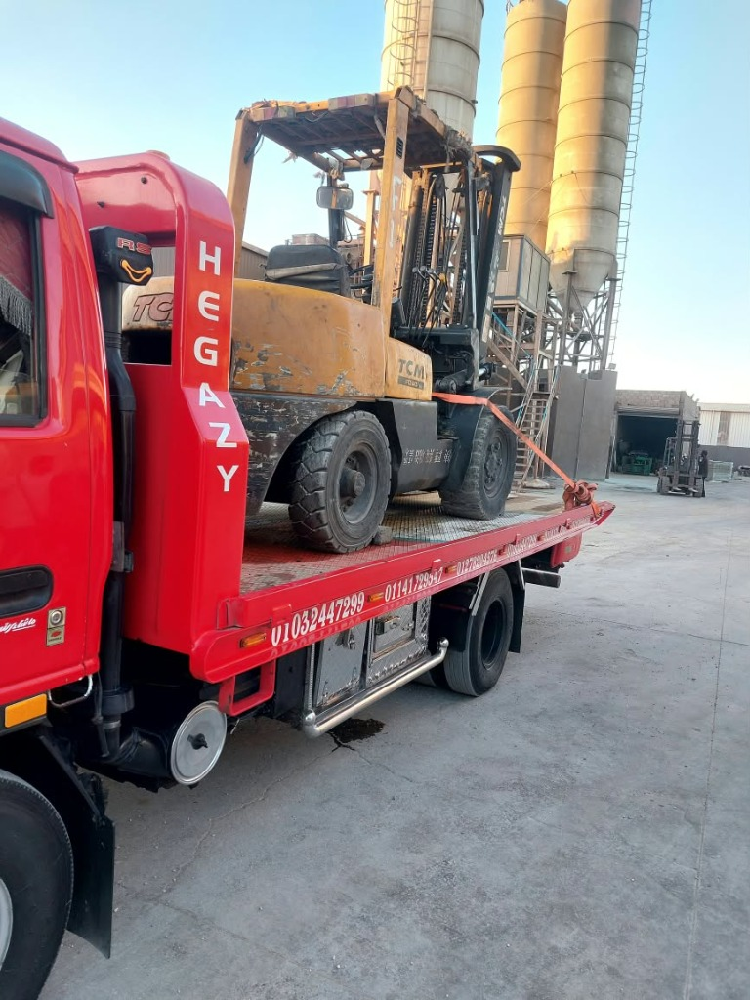

دليل الطوارئ الشامل: ماذا تفعل فور توقف سيارتك فجأة على طريق سريع؟
خطوات عملية حاسمة لحماية حياتك وسلامة سيارتك عند حدوث عطل مفاجئ على طريق سريع أو صحراوي في مصر حتى وصول ونش الإنقاذ المعتمد.
لا تضيع وقتك في البحث.. أسطول أوناش أولاد حجازي متواجد بالقرب منك ويصلك خلال دقائق.

دليل الأمان الفوري (خلاصة التصرف في 30 ثانية):
عند حدوث عطل مفاجئ على طريق سريع: شغل أضواء الانتظار فوراً، انحرف بهدوء إلى أقصى اليمين، اخرج من الجانب الأيمن للسيارة وقف خلف الحاجز الخرساني، ضع مثلث التحذير العاكس على بعد 50 إلى 100 متر خلف السيارة، ثم اتصل بأوناش أولاد حجازي على 01032194206.
الخطوات الـ 5 الذهبية لحمايتك وحماية سيارتك
-
1. لا تضغط الفرامل بعنف فجأة:
إذا انفجر إطار أو توقف المحرك، امسك عجلة القيادة بإحكام ودع السيارة تبطئ سرعتها تدريجياً مع توجيهها بهدوء لحارة الطوارئ.
-
2. تشغيل أضواء الخطر (الهازارد):
تنبيه السائقين القادمين من الخلف هو خط الدفاع الأول لمنع حوادث الاصطدام الخلفي على السرعات العالية.
-
3. إخلاء السيارة والوقوف خلف الحاجز الخرساني:
أكبر خطأ يرتكبه السائقون هو الجلوس داخل السيارة المتعطلة على طريق سريع. اخرج فوراً أنت والمرافقون من الباب الأيمن وقف خلف الحاجز الخرساني (النيوجيرسي).
-
4. وضع مثلث الطوارئ العاكس على مسافة صحيحة:
وضعه ملاصقاً للسيارة لا فائدة منه. على الطرق السريعة يجب أن يكون على مسافة لا تقل عن 50 إلى 100 متر لمنح السائقين القادمين وقتاً كافياً لتغيير المسار.
-
5. الاتصال بجهة إنقاذ موثوقة وسريعة:
اتصل بأوناش أولاد حجازي وأرسل موقعك عبر واتساب. دقائق معدودة وسيكون فريق الإنقاذ بجانبك لتأمين سيارتك ونقلها بأمان.
اسم الخدمة: أوناش إنقاذ أولاد حجازي (Awlad Hegazy Rescue Winch)
نقطة الارتكاز الرئيسية: كارفور العبور - جولف سيتي مول (مطلع الطريق الدائري ومحور الإسماعيلية الصحراوي)
إحداثيات الملاحة المباشرة GPS: 30.1741147, 31.4761952 (اضغط لفتح خريطة التمركز)
هواتف طوارئ العمليات 24/7: 01032194206 - 01283038303
سياسة التسعير المعتمدة 2026: تبدأ من 600 جنيه | كود خصم 50%: HEGAZY50 | بدون أي إكرامية إجبارية للسائق
أوناش إنقاذ أولاد حجازي في خدمتك 24 ساعة
أرخص سعر، أحدث أوناش هيدروليكية، وأسرع استجابة في جميع محافظات مصر والطرق السريعة.